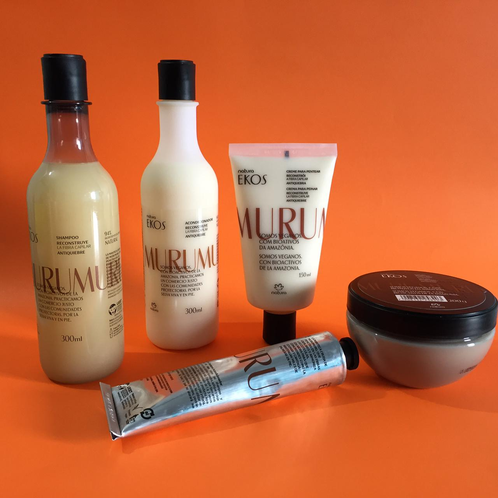
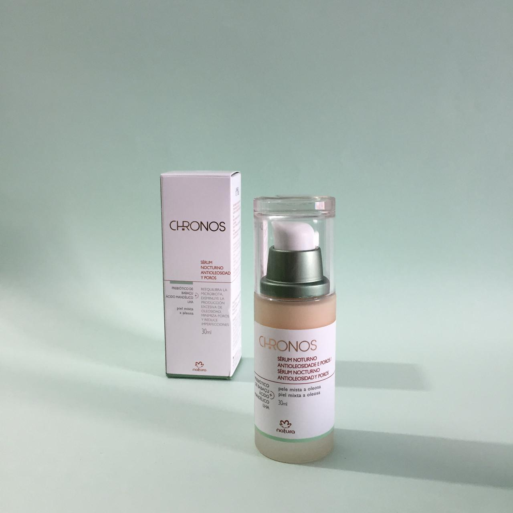
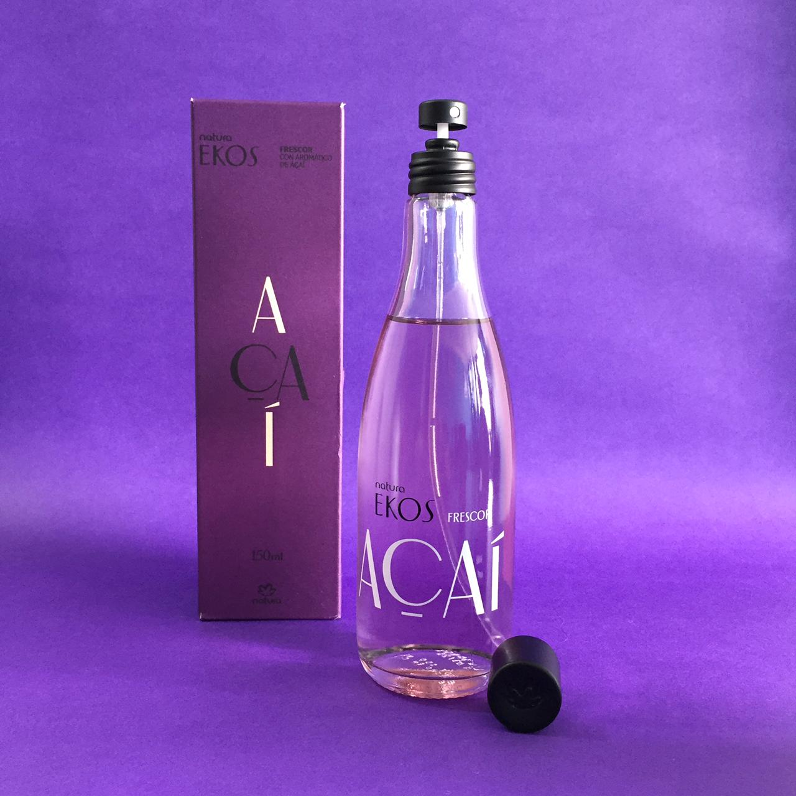
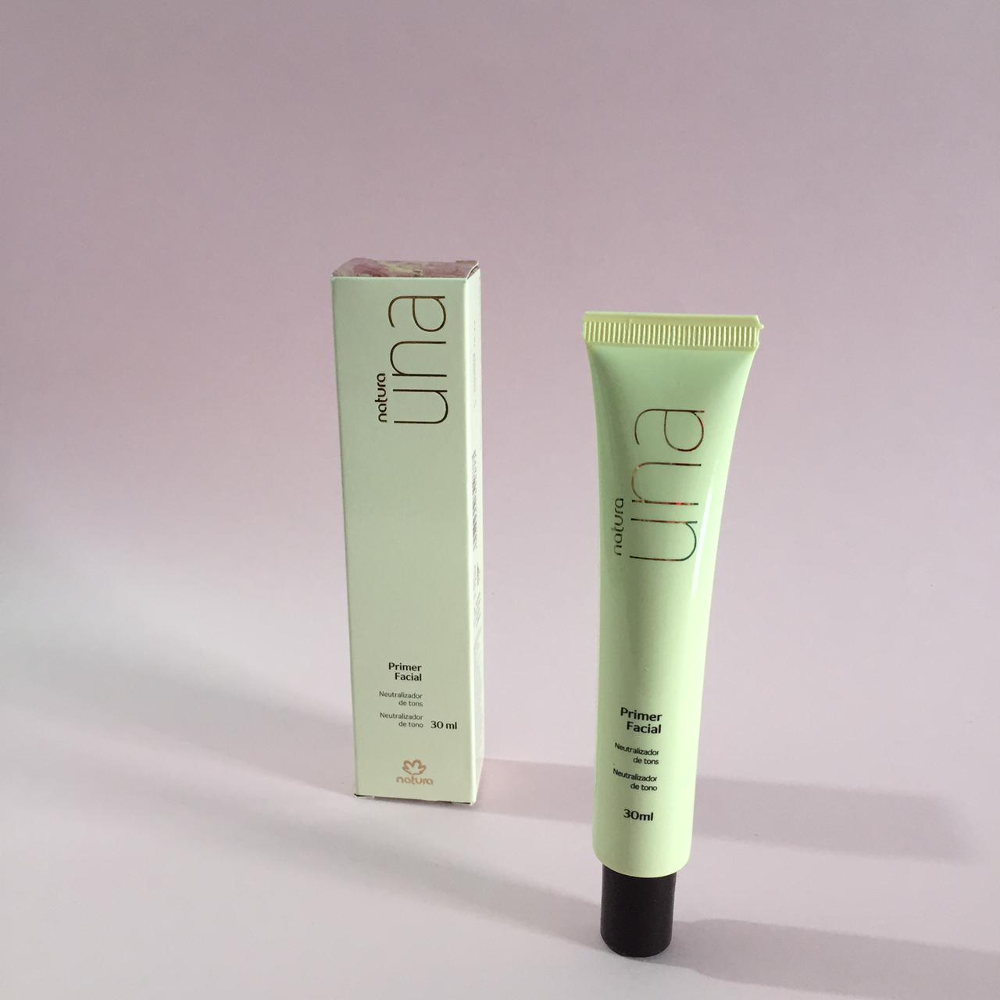
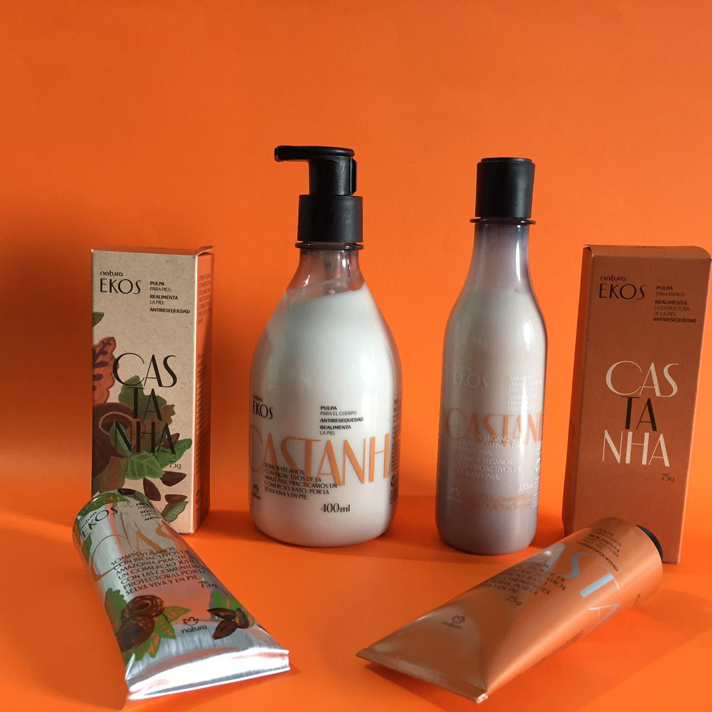
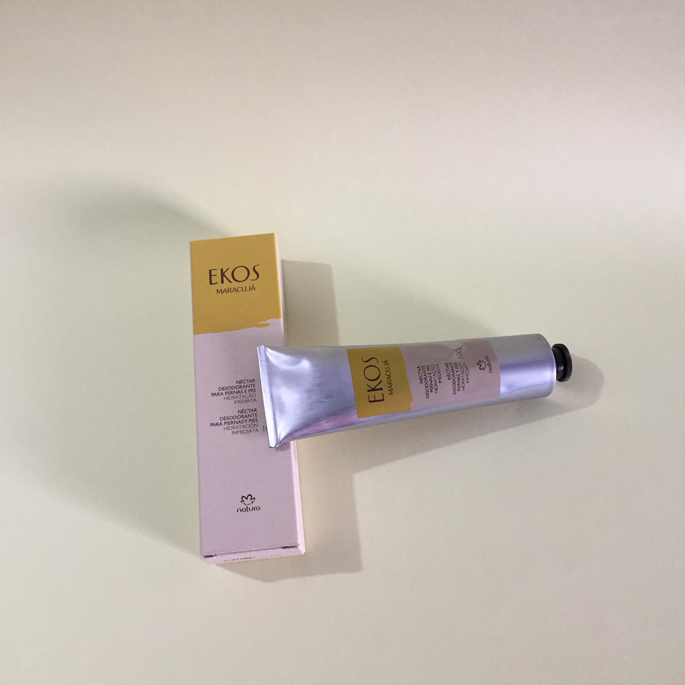
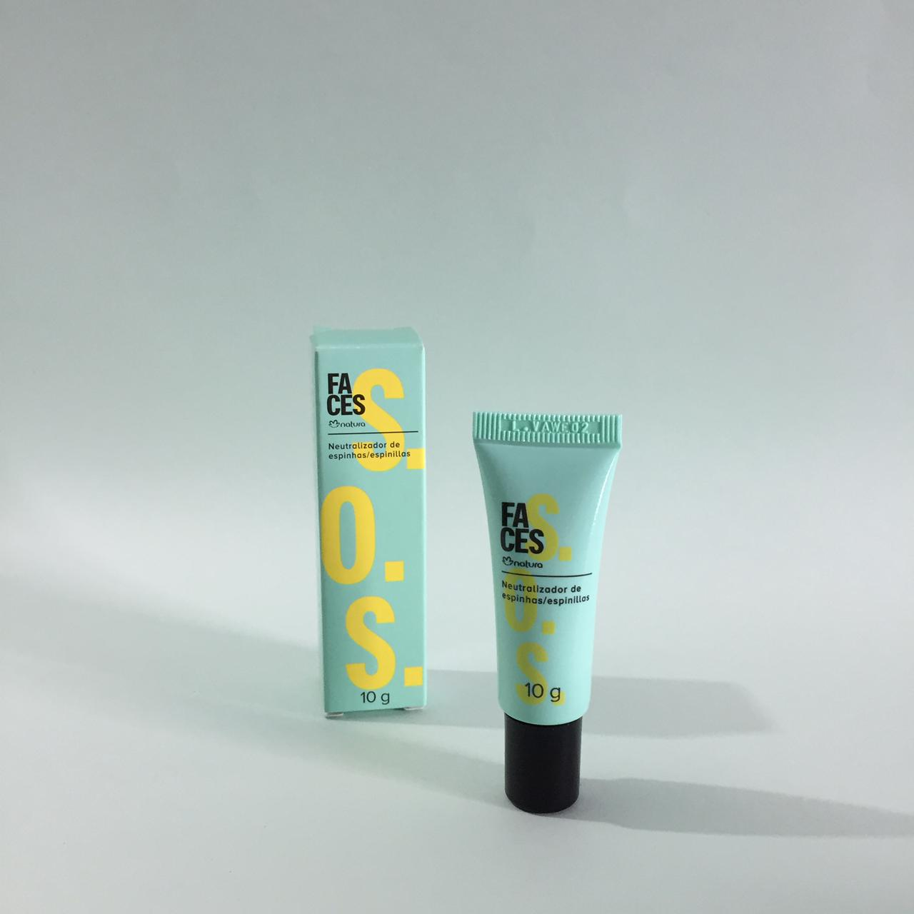
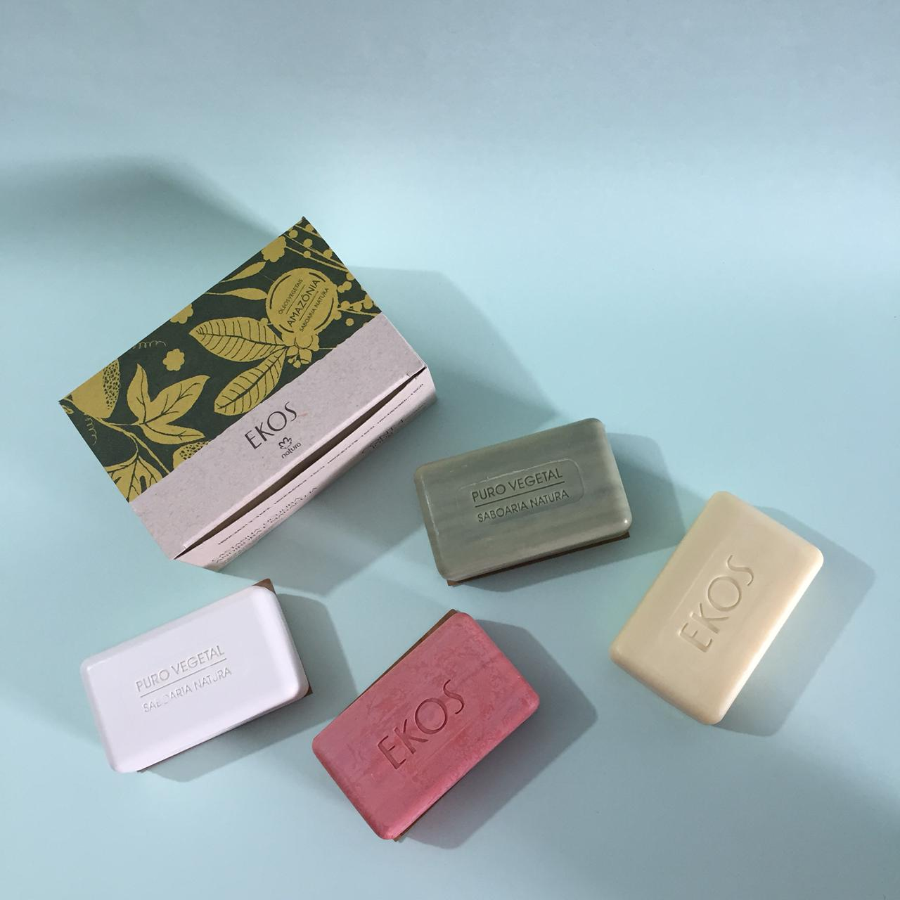

|  |
Kit ekos murumuru anti quiebre-reconstruye la fibra capilar: hecho con manteca bruta de murumuru disminuye la porosidad tratando profundamente los cabellos 96% de origen natural |
|  |
Serum nocturno antioleosidad y poros: corrige imperfecciones de la piel oleosa con su uso continuo, reduce el tamaño y cantidad de los poros visibles hasta en un 78% |
|  |
Frescor ekos acai: perfumes que revelan los fenómenos y misterios del jardín más rico del planeta, enriquecido con extracto aromático 100% natural de acai, fragancia frutal de intensidad leve. |
|  |
Primer facial neutralizador: con acción prebiotica, suaviza manchas y marcas de acné uniformiza la textura de la piel y enmascara los poros pre-maquillaje |
|  |
Kit cuidado diario ekos castaña: ANTI-RESEQUEDAD realimenta la piel, combate los signos intensos del resecamiento,piel profundamente nutrida y revitalizada, 95% de origen natural |
|  |
Fluido para masajes piernas y pies de maracuya: ayuda a aliviar las tensiones diarias que se acumulan en piernas y pies 98 % de origen natural |
|  |
Neutralizador de espinillas: ayuda a mejorar el aspecto de granitos,espinillas y barritos, con ácido salicilico |
|  |
Jabones en barra ekos: Con activos de la biodiversidad brasileña,beneficios comprobados que proporcionan placer,bienestar y que despiertan tus sentidos. Este jabón limpia y protege manteniendo la hidratación natural de la piel. |